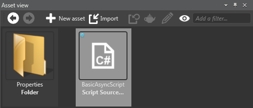

Create a script
Beginner Programmer
You can create scripts using Game Studio or an IDE such as Visual Studio.
Create a script in Game Studio
In the Asset View, click Add asset > Scripts and select a script type.

Note
For information about different types of script, see Types of script.
The New script dialog opens.
Specify a class and namespace for the script and click Create script.
To use the script, you need to save it. By default, Game Studio prompts you to save the script now.
After you save the script, you can see it in the Asset View.
Note
Although scripts are a kind of asset, they're not saved in the Assets folder. Instead, they're saved in the relevant assembly folder. For more information, see Project structure.
You can also see the new script in Visual Studio.

Tip
To open your solution in Visual Studio from Game Studio, click the (Open in IDE) icon in the Game Studio toolbar.
using System;
using System.Text;
using System.Threading.Tasks;
using Stride.Core.Mathematics;
using Stride.Input;
using Stride.Engine;
namespace MyGame
{
public class BasicAsyncScript : AsyncScript
{
public override async Task Execute()
{
while(Game.IsRunning)
{
// Do some stuff every frame
await Script.NextFrame();
}
}
}
}
Create a script in Visual Studio
Open Visual Studio.
Tip
To open your solution in Visual Studio from Game Studio, click the (Open in IDE) icon in the Game Studio toolbar.
The game solution is composed of several projects:
The project ending .Game is the main project, and should contain all your game logic and scripts.
Other projects (eg MyGame.Windows, MyGame.Android etc) contain platform-specific code.
For more information, see Project structure.
Add a new class file to the
.Gameproject. To do this, right-click the project and select Add > New Item.The Add New Item dialog opens.
Select Class, type a name for your script, and click Add.
Visual Studio adds a new class to your project.
In the file you created, make sure the script is public and derives from either AsyncScript or SyncScript.
Implement the necessary abstract methods.
For example:
using System; using System.Text; using System.Threading.Tasks; using Stride.Core.Mathematics; using Stride.Input; using Stride.Engine; namespace MyGame { public class SampleSyncScript : SyncScript { public override void Update() { if (Game.IsRunning) { // Do something every frame } } } }Save the project and script files.
Because you modified the script, Game Studio needs to reload the assembly to show the changes.
Click Yes.
You can see the script in the Asset View.
Note
Although scripts are a kind of asset, they're not saved in the Assets folder. Instead, they're saved in the relevant assembly folder. For more information, see Project structure.